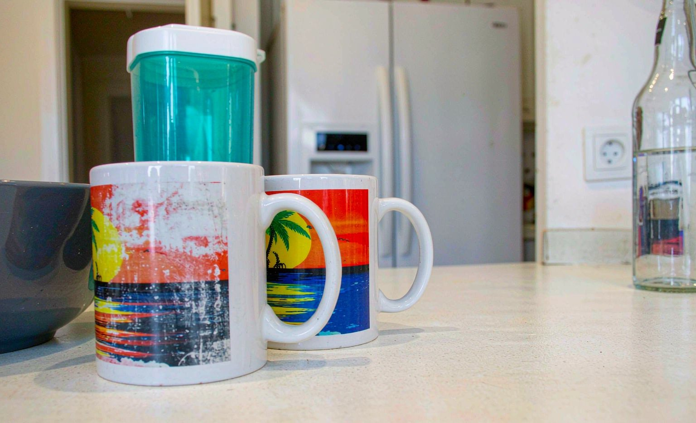

Short answer: my first custom mug lost most of its print within two months, and the culprit was my dishwasher, not the printer. High heat and harsh detergent slowly stripped the design. After switching to gentle hand washing, my replacement mug still looks new after a year. The bottom line: custom mugs last, but only if you treat them right.

What Happened to My Mug
I ordered a custom mug with a photo of my dog from Zazzle for $19.99 plus shipping, and for the first month it was perfect. I am not a careful person about dishes, so it went into the dishwasher with everything else. Around week six I noticed the black background of the photo had gone a weird charcoal color. By week nine the dog's face was barely visible. I was annoyed at the seller before I did any research, which was a mistake.
The Mistake I Made
It was not a printing defect. It was me. Dishwasher drying cycles push water and detergent against the print at temperatures well above what most sublimation coatings are rated for, and standard dishwasher tablets are mildly abrasive. Every cycle sandpapered the design a little. The seller's care card, which I had thrown away with the packaging, said hand wash only in letters I apparently did not read.
My Testing Notes: Dishwasher Versus Hand Washing
When my replacement mug arrived, I decided to be scientific about it, and the difference was obvious within weeks:
| Care Method | Print Condition After 30 Days | Verdict |
|---|---|---|
| Top rack dishwasher, normal cycle | Visible dulling, edges of the design softening | Avoid |
| Top rack dishwasher, eco cycle | Slight dulling around the handle area | Still avoid |
| Hand wash, warm water, soft sponge | No visible change at all | The only method I use now |
| Hand wash with occasional soak | No change, but avoid soaking printed rims | Fine in moderation |
My Replacement Mug Routine
- Rinse the mug soon after drinking so coffee stains never set
- Wash with warm water, mild dish soap, and a soft sponge, never a scourer
- Dry with a soft cloth instead of letting it air dry on a metal rack
- Store it with space around it so the print never scuffs against other mugs
That routine takes about thirty extra seconds, and after a full year the print is still crisp. For a full care breakdown from a professional angle, see our guide to keeping a custom mug print flawless.
When a Dishwasher-Safe Coating Actually Matters
Some sellers now offer mugs with upgraded dishwasher-safe coatings, and they do perform better in testing. Even then, top rack only and gentle cycles are the rule. If you know the recipient is a dishwasher household, either pay for the upgraded coating or pick a mug style where the design sits well away from the rim and handle, where chips start.
Frequently Asked Questions
Are custom mugs dishwasher safe?
Most are not. Standard sublimation prints fade in dishwasher heat and detergent unless the seller specifies an upgraded dishwasher-safe coating. Hand washing is the safe default for any personalized mug.
How long does a custom mug print last?
With regular hand washing, a quality sublimation print can stay vibrant for years of daily use. In a hot dishwasher cycle, the same print can dull noticeably within one to two months.
What is the best way to wash a custom mug?
Warm water, mild dish soap, and a soft sponge, then towel dry. Rinse soon after use so coffee and tea stains never need aggressive scrubbing to remove.
Why did my mug print fade so fast?
The usual causes are dishwasher heat, abrasive detergent, scouring pads, and microwaving. Any one of these degrades the coating; combined, they can strip a print in weeks.